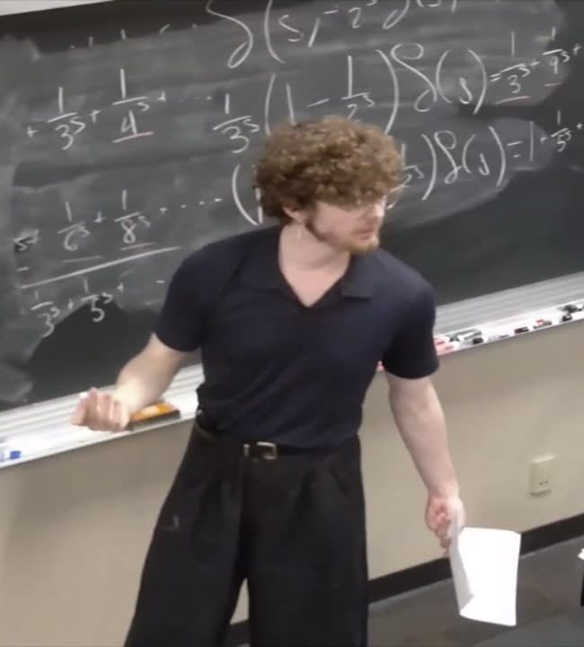

Curriculum Vitae
Last Updated May 2026: Curriculum Vitae
Education
-
Ph.D. in Mathematics,
Claremont Graduate University,
Expected 2030
-
M.S. in Mathematics,
Claremont Graduate University,
Expected 2026
-
B.S. in Mathematics,
California State University, San Marcos,
2025
Research Interests
Publications and Preprints
ArXiv:
Kooiker, M.
Presentations

-
The Eclipse Depth and Dayside Temperature of TOI-1181b.
JMM Undergraduate Presentations,
Washington, D.C.,
January 2026.
-
Modeling Population Graphs with Genetic Data.
JMM Undergraduate Presentations,
Seattle,
January 2025.
-
Modeling Population Graphs with Genetic Data.
AMS Undergraduate Presentations,
University of California, Riverside,
October 26, 2024.
-
Modeling Population Graphs with Genetic Data.
The San Marcos Informal Mathematics In-Person Colloquium (SMIMIC),
California State University San Marcos,
October 3, 2024.